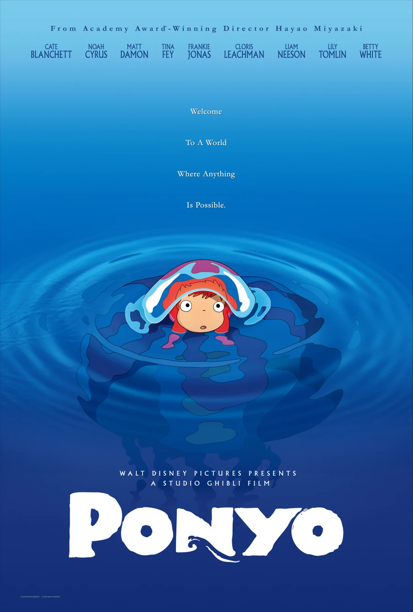

Ponyo - Hayao Miyazaki

Overview & Recap
Ponyo is a family adventure anime that follows Sosuke, a young boy. He captures a 'goldfish' (their goldfish built hella different to ours), Ponyo. She is the daughter of a wizard and transforms herself into a littl girl. Whilst she slowly falls in love with Sosuke (i swear four-year-olds have a more existent love life than me), her dad tries to find her, flooding the whole place.
Review
ahh ponyo is so cute. the graphics are also really really really pretty, especially the flooding scenes with all the fish and stuff. The plot is pretty good but bruh. they are four. why are they getting married. at four. also why did everyone just accept ponyo as a goldfish bestie in what alternate dimension is that a goldfish? the characters are all developed pretty well, like you can really see the dynamics between the characters which was very cute to watch (the mother and father's dynamic was so funny)
Rating
hm 3.5/5. i enjoyed this movie as a filler but i cant say its one of my favourite ghibili films.